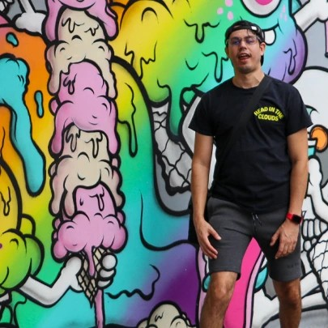
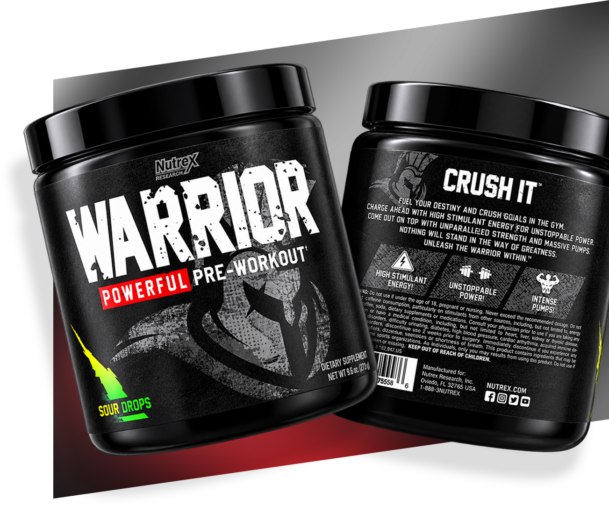
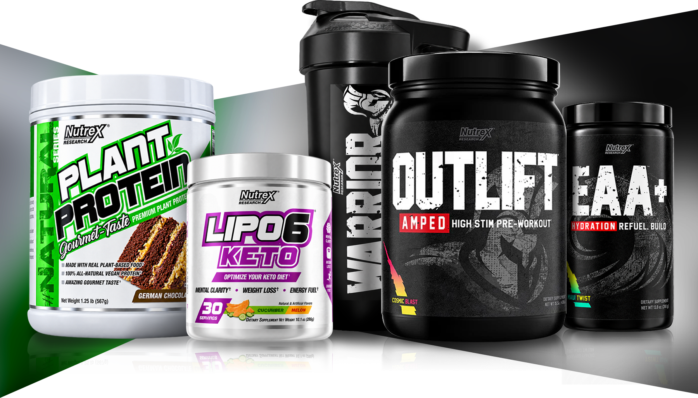
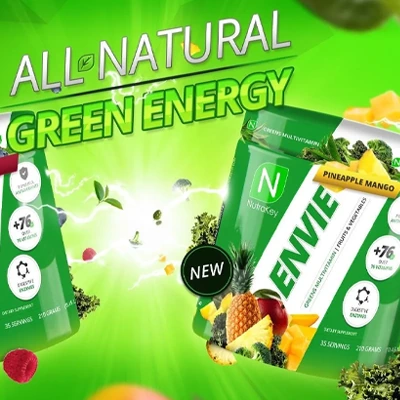
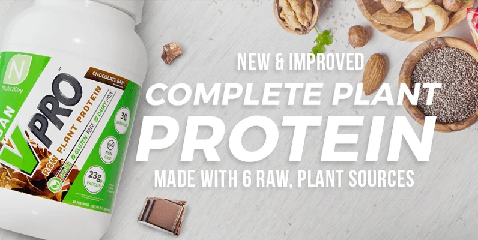
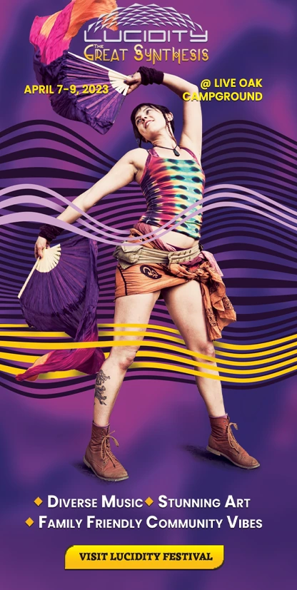
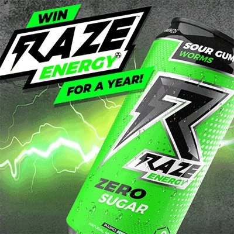
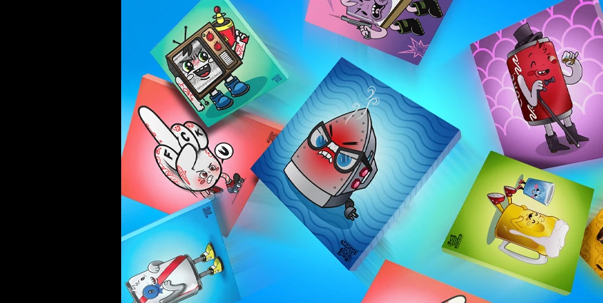
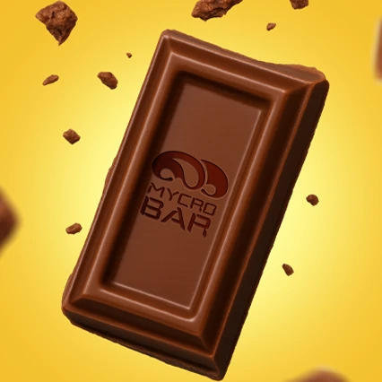
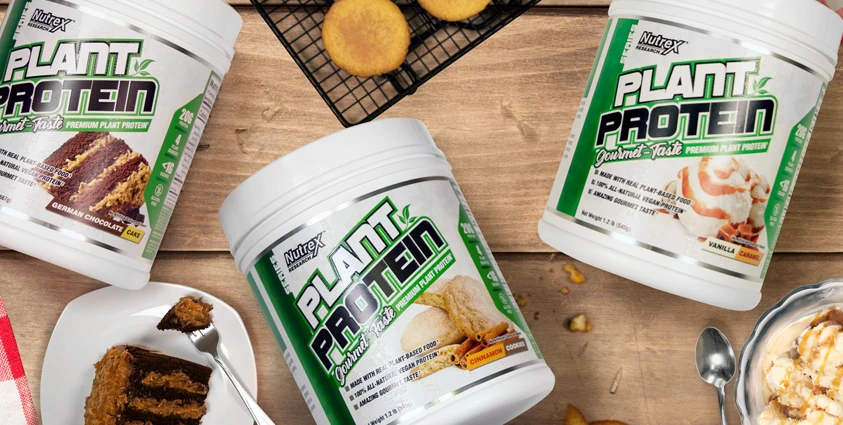

aaron イーライ
©09-2026
I build ideas into
worlds
always polished, sometimes raw,
but always intentional with personality.

I’m aarondotjpeg, a creative working across graphic design, branding, art direction, illustration, and digital experiences. I move between ideas freely, using whatever medium best brings a project to life.
I was born in New York and now based in Florida, creativity has always been part of how I see the world. I started with drawing, painting, and photography long before finding graphic design, and over time those interests grew into branding, digital experiences, and creative direction.
My work has been shaped by childhood cartoons, anime, space exploration, street culture, gaming, and the weird details I notice in everyday life. I’m drawn to bold visuals, good type, and unexpected combinations. Whether physical or digital, I want to make things that feel considered without feeling overly serious — things people want to look at, interact with, and remember.
Contact
aarondotjpeg@gmail.comWhat I do
Graphic Design & Brand Development
Visual identities, illustration, print, packaging, and creative systems built to give brands a different point of view.
Web & Digital and Interactive Design
Thoughtful, responsive digital experiences designed from the smallest to largest screen.
Art Direction & Creative Leadership
Concept development, visual direction, storyboarding, and guiding ideas from their earliest stages through execution.
Creative Discovery & Concepting
Finding the idea pursuing, shaping it into something tangible, and figuring out the most interesting way to bring it to life.
Experience
JULY 2025 – PRESENT
Lead Web Designer / Art Director
Hydra Workflows
Leading web design, creative direction, and digital branding for AI-powered workflow and automation products.
OCT 2022 – APR 2023
Head Graphic Designer
Lucidity Festival
Led creative direction and visual development across the festival’s 10th anniversary campaign, from digital to on-site experiences.
MAR 2019 – MAY 2020
Creative Director
Nutrex Research
Directed branding, creative campaigns, and packaging across a growing portfolio of health and performance products.
FEB 2017 – MAR 2019
Lead Creative Director / Marketing Manager
Repp Sports
Led branding, digital marketing, and creative campaigns across product launches, e-commerce, and social.
JAN 2016 – MAR 2019
Senior Graphic Designer
NutraKey Health
Shaped branding, packaging, digital campaigns, and web experiences across a large portfolio of health and performance products.
AUG 2013 – MAY 2014
Graphic Designer / Project Manager
Pin Agency
Developed brand identities, digital experiences, and creative campaigns across a diverse portfolio of agency clients.
I like strange ideas, good
coffee, and making things
that
are hard to ignore.
Tiny marks - Big personalities
I’ve always loved making logos. There’s something about taking an entire idea and figuring out how to say it with one mark.
A collection of logos and marks created over the years for brands, businesses, projects, and a few ideas of my own. Different styles, different stories, each made to have a personality of its own.
I don’t approach every logo with the same formula or style. Some ideas call for something clean, some loud, playful, illustrated, or a little unexpected. I guess the best part for me is finding that one detail that makes the whole thing click.
01
NutraKey Health
As Senior Graphic Designer at NutraKey Health, I worked across branding, packaging, web, and digital campaigns for its growing line of health and performance products.
Over three years, I designed more than 75 product labels and packaging systems, along with websites, photography, video, and digital advertising. The success of my work led to me taking the creative lead at NutraKey, expanding my role from hands-on design into directing the broader visual identity and creative direction of the brand.


02
Repp Sports
As Lead Creative Director and Marketing Manager at REPP Sports, I worked across branding, packaging, web, and marketing for a growing lineup of sports nutrition and performance products.
I developed branding and packaging for more than 35 products, including the first seven RAZE Energy SKUs, while also creating websites, campaigns, photography, video, and social content.
From the product on the shelf to the campaign around it, I helped shape how the brand looked, moved, and showed up. The role pushed me beyond individual pieces of design and into building complete visual experiences around products and their launches.


03
Nutrex Research
As Creative Director at Nutrex Research, I led branding, creative campaigns, and product packaging across its lineup of sports nutrition and performance products.
During my time there, I developed more than 55 product labels and visual product systems, while spearheading the launches of the Warrior Series, Plant Protein Series, and Lipo-6 Keto Series. My work extended across packaging, photography, video, and marketing, helping shape each launch from product identity through campaign execution.


World Wide Web
The Bear Necessity Cabin
I’ve been designing for the web for years, creating everything from landing pages and portfolios to e-commerce stores and full digital experiences.
Good design gets you there. Good experiences make you stay. I bring branding, typography, imagery, interaction, and usability together to give each site its own personality. Sometimes clean and simple, sometimes loud and immersive - whatever makes the experience feel right.
Content Creation
I create content that gives brands something to say and a visual way to say it—from campaigns and product launches to social, advertising, illustration, and everything in between.
One idea. A hundred ways to bring it to life.
Sometimes it starts with a product, sometimes a campaign, and sometimes just a weird idea worth exploring. I like building the visuals around it and finding ways to make the content feel fresh, recognizable, and made for the space it lives in.






